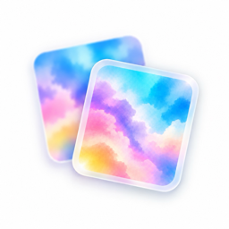

照片不上传
全部计算在浏览器内完成

过片 STYLEPORT为支持「摄影风格 2」的 iPhone HEIC 照片补齐「摄影风格 3」数据。无需安装，不重新编码，照片始终留在你的设备里。
全部计算在浏览器内完成
只补元数据，不重新压缩
无需账号、安装或上传等待
网页版复用了 StylePort 的 HEIC 容器补写逻辑。图片编码、HDR 色调映射和原有拍摄信息都会保留。
从相机胶卷、文件或 iCloud 中选择 HEIC 照片。
自动识别兼容性，为照片补齐摄影风格 3 数据。
文件名自动追加 _GP，原照片不会被覆盖。
需要是包含可编辑摄影风格与 HDR 色调映射数据的 iPhone HEIC 原图，且目前使用摄影风格 2。已经包含摄影风格 3 的照片会自动跳过。
StylePort 不重新编码照片，而是直接把摄影风格 3 所需的项目、蒙版关联与元数据写入 HEIC 容器，因此原始主图编码不变。
网页版处理所选 HEIC 照片本体。实况照片的视频轨道、iCloud 相册中的编辑记录不会在此页面重建；需要完整实况链路时请使用原生 StylePort App。
推荐在 iPhone、iPad 或 Mac 的 Safari 中下载并用系统照片 App 打开。部分桌面浏览器不能直接预览 HEIC，但不会影响文件转换。